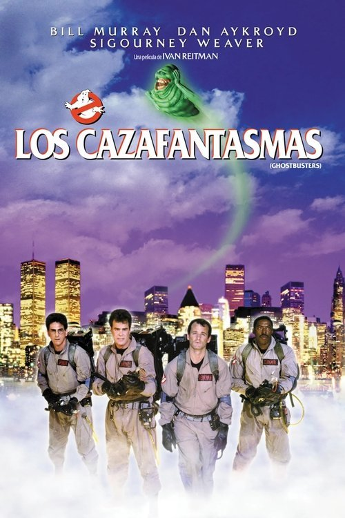

Los cazafantasmas (1984)
Sinopsis Rápida
Nueva York está infestada de fantasmas, y solo un equipo de excéntricos científicos con una trampa para protones puede salvarla. Prepárate para una aventura sobrenatural llena de humor y efectos especiales inolvidables.
Sinopsis Detallada
Cuando extraños sucesos paranormales azotan la ciudad de Nueva York, tres parapsicólogos desempleados ven la oportunidad de su vida: fundar 'Los Cazafantasmas', una empresa dedicada a la eliminación de espectros. Armado con ingeniosos artilugios y una actitud irreverente, el equipo se enfrenta a una creciente amenaza sobrenatural que podría sumergir a la ciudad en el caos. La película es una mezcla explosiva de comedia, terror ligero y efectos visuales pioneros para su época, creando una experiencia cinematográfica única y memorable. El humor inteligente y la química entre los personajes hacen de esta película un clásico indiscutible.
¿Por qué tenés que verla?
- Una comedia divertida y escalofriante que te mantendrá al borde del asiento.
- Los efectos especiales innovadores para su época siguen siendo impresionantes.
- Su impacto cultural es innegable, con merchandising icónico y secuelas que perduran.
- Una historia de amistad y trabajo en equipo frente a lo inesperado.
Idea Extra
Análisis comparativo de los efectos especiales de 'Los Cazafantasmas' (1984) con las técnicas modernas en el cine de terror y comedia.